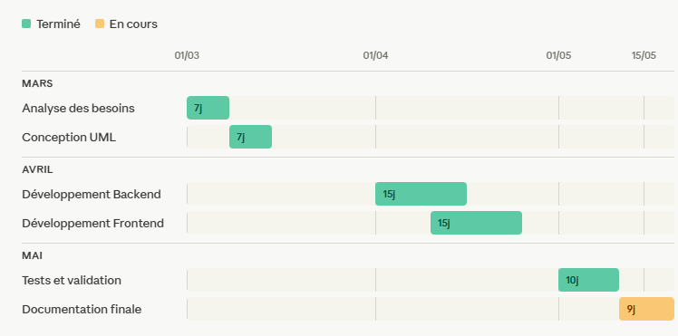
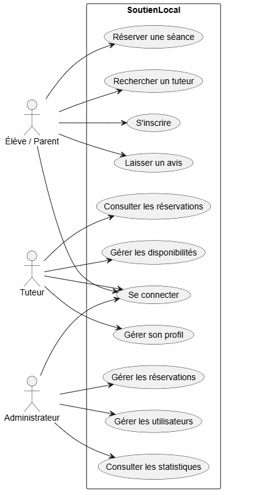
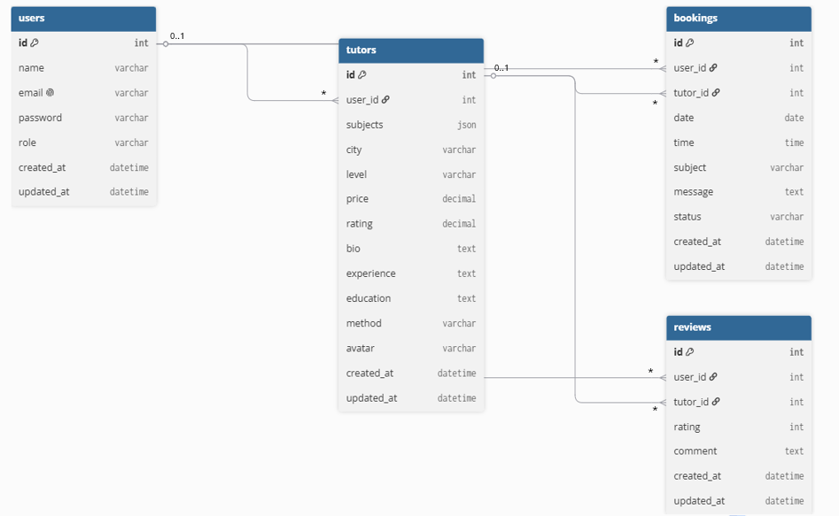
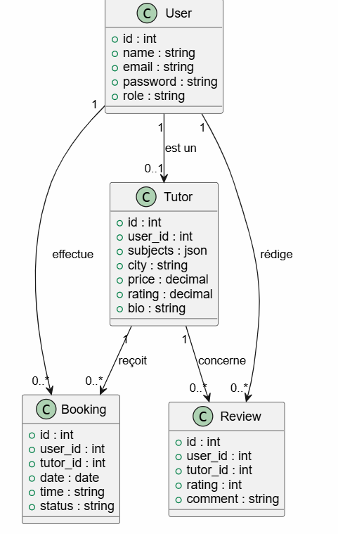
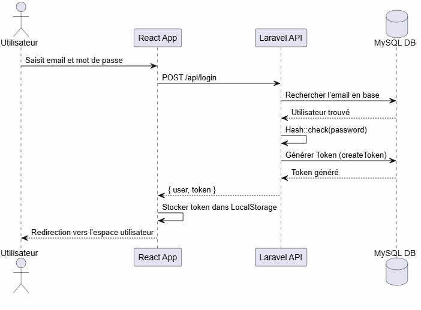

Office de la Formation Professionnelle
et de la Promotion du Travail
Rapport de Projet de Fin d'Études (PFE)
Développement Web Full-Stack
Conception et Réalisation d'une Plateforme Web
SOUTIEN LOCAL
Plateforme de mise en
relation pour le soutien scolaire
Réalisé par : Ali znaki & Walid bensghir
Encadré par : : Naima El Alami, Ichraf Nachite
Technologies : React.js, Laravel 11, MySQL, REST API
Année universitaire 2025/2026
Chapitre 1 : Remerciements
Au terme de la réalisation de ce projet, je tiens à exprimer ma profonde gratitude à toutes les personnes qui
ont contribué, de près ou de loin, à son accomplissement.
Je remercie tout particulièrement mon professeur encadrant pour son accompagnement, sa
disponibilité, ses conseils avisés et son soutien constant tout au long de ce travail. Grâce à son
expertise, à ses orientations pertinentes et à ses remarques constructives, j'ai pu mener ce projet dans les
meilleures conditions et enrichir mes connaissances techniques et professionnelles.
J'adresse également mes sincères remerciements à mon professeur parrain pour son suivi, ses
encouragements et l'intérêt qu'il a porté à ce projet. Son soutien a constitué une source de motivation tout
au long de cette expérience.
Je tiens aussi à remercier l'ensemble du corps enseignant ainsi que le personnel
administratif de l'établissement pour la qualité de la formation dispensée, les connaissances
transmises et les valeurs inculquées durant mon parcours académique.
Mes remerciements s'adressent également à ma famille pour son soutien indéfectible, sa
patience, sa confiance et ses encouragements permanents. Leur présence et leur appui moral ont été
essentiels à la réussite de ce projet.
Enfin, je remercie chaleureusement mes amis ainsi que toutes les personnes qui m'ont apporté
leur aide, leurs conseils ou leurs encouragements, contribuant ainsi directement ou indirectement à la
réalisation de ce travail.
À toutes ces personnes, j'adresse mes plus sincères
remerciements et ma profonde reconnaissance.
Chapitre 2 : Présentation de l'organisme d'accueil
2.1 Identification de l'organisme
L'Office de la Formation Professionnelle et de la Promotion du Travail (OFPPT) constitue le
principal opérateur public de formation professionnelle au Maroc. Créé sous forme d'établissement public doté
de la personnalité morale et de l'autonomie financière, cet organisme a été mis en place afin de
répondre aux besoins croissants du marché de l'emploi en formant une main-d'œuvre qualifiée et compétente
dans différents domaines d'activité.
Avec l'essor économique du Royaume, l'OFPPT s'est positionné comme le levier stratégique de développement de
la compétitivité des entreprises. Grâce à son réseau national d'instituts et de centres de formation répartis dans
l'ensemble du Royaume, l'OFPPT offre aux jeunes l'opportunité d'acquérir des connaissances théoriques solides
et des compétences pratiques favorisant leur insertion immédiate dans la vie active.
2.2 Missions et activités
Afin de remplir ses objectifs nationaux de développement, l'OFPPT assure plusieurs missions essentielles :
- La formation initiale : Offrir des cursus diplômants dans des métiers variés (technologies, gestion, artisanat, industrie).
- La formation continue : Renforcer et actualiser les compétences des salariés des entreprises partenaires.
- L'insertion professionnelle : Accompagner les jeunes diplômés dans leur transition vers le marché du travail.
- Le conseil aux entreprises : Aider à identifier les besoins en compétences et à concevoir des plans de formation adaptés.
- L'innovation pédagogique : Moderniser les méthodes d'apprentissage à travers les technologies de l'information et de la communication (e-learning).
2.3 Structure organisationnelle de l'établissement
La gouvernance de l'OFPPT repose sur un conseil d'administration tripartite composé de représentants de l'État,
des organisations d'employeurs et des représentants des salariés. Cette structure garantit que les programmes
de formation restent en phase avec les besoins réels de l'économie nationale.
Au niveau opérationnel, l'OFPPT s'articule autour de directions régionales qui supervisent les complexes de
formation. Chaque établissement (ou complexe) est dirigé par un Directeur, assisté par un Directeur des
Études et des chefs de travaux qui coordonnent les activités des formateurs et des stagiaires.
Voici un schéma descriptif simplifié de l'organisation d'un institut type de l'OFPPT :
graph TD
DG["Direction Générale de l'OFPPT"] --> DR["Directions Régionales"]
DR --> DI["Direction de l'Institut / Complexe"]
DI --> DE["Direction des Études"]
DI --> SG["Service Gestion Stagiaires & Administration"]
DE --> CF["Corps Formateur / Professeurs"]
CF --> ST["Stagiaires / Étudiants"]
Cette structuration administrative assure le bon déroulement des cours théoriques et pratiques, la gestion des
examens et le suivi des stages de fin d'études en entreprise ou de projets de fin d'études (PFE) comme celui-ci,
favorisant une insertion harmonieuse dans le tissu socio-professionnel.
Chapitre 3 : Gestion et planification du projet
3.1 Cadre méthodologique (Scrum/Agile)
Le projet SoutienLocal a été mené selon la méthodologie Scrum (Agile). Cette
approche de gestion de projet permet un développement incrémental et itératif, assurant une adaptabilité
optimale face aux contraintes et aux ajustements fonctionnels. L'équipe projet a été organisée en rôles clairs :
- Product Owner (Client / Encadrant) : Définit la vision du produit, priorise le Backlog et
valide les fonctionnalités livrées à chaque fin de Sprint.
- Scrum Master / Équipe de Développement (Ali Znaki & Walid Bensghir) : Assure le développement,
résout les obstacles techniques et veille à l'application des bonnes pratiques de développement.
Le développement s'est découpé en Sprints successifs de 7 à 10 jours. Chaque Sprint commençait par une planification
des tâches (Sprint Planning) et se clôturait par une revue et une démonstration des incréments logiciels validés par l'encadrant.
Cette méthodologie a permis de diviser la complexité du projet (frontend et backend séparés) et de minimiser les risques
d'intégration tardive, en garantissant un flux continu de livraisons.
3.2 Planification temporelle et Jalons
La planification du projet s'est déroulée sur une durée globale de 8 semaines .
Les tâches clés ont été listées, évaluées en termes d'effort (jours de travail) et ordonnées de manière logique :
| Code |
Tâche |
Description |
Durée |
Prédécesseurs |
| T1 |
Analyse et Spécifications |
Étude des besoins, rédaction du cahier des charges. |
7 j |
— |
| T2 |
Conception UML |
Réalisation des diagrammes de cas d'utilisation, classes et séquences. |
7 j |
T1 |
| T3 |
Setup Environnement |
Configuration de Laravel 11, React.js et installation de MySQL. |
5 j |
T2 |
| T4 |
Développement API REST |
Création des modèles, contrôleurs et routes d'API Laravel. |
15 j |
T3 |
| T5 |
Développement Frontend |
Intégration de l'interface en React et intégration d'Axios. |
15 j |
T2 |
| T6 |
Tests et Corrections |
Tests d'intégration, corrections CORS et validation des fonctionnalités. |
10 j |
T4, T5 |
Ces estimations prennent en compte les phases d'auto-apprentissage nécessaires à l'implémentation de Laravel Sanctum
pour la sécurisation de notre API.
3.3 Outils de planification (Gantt & PERT)
Pour assurer le suivi du calendrier de développement, nous avons conçu un diagramme de Gantt qui permet
de visualiser le chevauchement des phases de développement frontend et backend :

Figure 3.1 — Planning et enchaînement des tâches sur 5 semaines.
En parallèle, le réseau PERT a été construit pour mettre en évidence les dépendances techniques entre
les tâches et identifier le chemin critique. Les tâches T3 (Setup) et T4 (API Backend) sont sur le
chemin critique car toute dérive sur celles-ci repousse la livraison finale :
flowchart LR
Start([Début]) --> T1[T1 Analyse 7j]
T1 --> T2[T2 Conception 7j]
T2 --> T3[T3 Setup Laravel 5j]
T3 --> T4[T4 API Backend 15j]
T2 --> T5[T5 Frontend React 15j]
T4 --> T6[T6 Tests & Corrections 10j]
T5 --> T6
T6 --> End([Fin])
style T1 fill:#3498db,color:white
style T3 fill:#e74c3c,color:white
style T4 fill:#e74c3c,color:white
style T6 fill:#2ecc71,color:white
3.4 Analyse des risques et suivi
Une démarche proactive d'analyse des risques a été menée pour anticiper les anomalies potentielles durant le cycle de
développement. Ce tableau liste les menaces clés ainsi que leurs mesures correctives :
| Risque potentiel |
Impact |
Probabilité |
Mesures d'atténuation / Solutions |
| Problèmes CORS |
Moyen |
Haute |
Configuration rigoureuse des en-têtes dans le backend Laravel et utilisation d'un proxy local. |
| Retard responsive |
Élevé |
Moyenne |
Adopter l'approche Mobile-First et utiliser un système de grille fluide natif en CSS. |
| Sécurité des données |
Critique |
Basse |
Hachage fort des mots de passe et validation systématique de toutes les entrées utilisateur côté API. |
| Perte de code / conflits |
Moyen |
Moyenne |
Utilisation stricte de Git avec des branches de fonctionnalités distinctes et des commits réguliers. |
Le suivi quotidien des tâches a été centralisé sur le gestionnaire de projet Trello, matérialisant visuellement
les tâches à faire (To Do), en cours (In Progress) et terminées (Done). Cela a permis une synchronisation constante
entre les deux développeurs.
Chapitre 4 : Analyse et spécification des besoins
4.1 Contexte du projet et étude de l'existant
Le soutien scolaire est devenu un service indispensable pour de nombreux élèves afin d'améliorer leurs résultats
scolaires. Cependant, les modalités traditionnelles de mise en relation entre tuteurs et élèves présentent des lacunes importantes.
Étude de l'existant :
Actuellement, les élèves et les parents d'élèves s'appuient principalement sur :
- Le bouche-à-oreille au sein de l'entourage familial ou amical.
- Les petites annonces publiées sur les réseaux sociaux (Facebook, WhatsApp) ou des sites de petites annonces généralistes.
- Les affichages physiques dans les commerces de proximité.
Critique de l'existant :
Ces canaux souffrent de limites majeures :
- Manque de transparence : Les tarifs ne sont pas uniformes ni affichés clairement à l'avance, ce qui complique les comparaisons.
- Absence de vérification : Aucun mécanisme ne permet de valider les diplômes ou les compétences réelles des tuteurs.
- Pas de suivi : Il n'existe pas de plateforme intégrée pour planifier les réservations, suivre l'historique ou donner des avis constructifs sur la qualité du soutien scolaire.
4.2 Spécification des besoins fonctionnels
Les fonctionnalités attendues de l'application SoutienLocal sont regroupées par espace utilisateur afin
de couvrir l'ensemble des cas d'utilisation identifiés :
Espace Élève & Parent :
- F1 — Connexion & Inscription : Création et gestion d'un compte élève.
- F2 — Recherche avancée : Moteur de recherche multicritère (matière, tarif horaire, ville, évaluation globale).
- F3 — Profil des tuteurs : Consultation détaillée de la biographie, méthodologie et diplômes.
- F4 — Réservation de cours : Planification d'une séance via un calendrier interactif.
- F5 — Avis & Notation : Notation sur 5 étoiles et commentaire laissé après chaque séance réalisée.
- F6 — Dashboard élève : Suivi des cours acceptés et budget total dépensé.
Espace Tuteur (Enseignant) :
- T1 — Gestion du profil tuteur : Saisie des matières enseignées, description de la méthodologie et prix horaire (MAD).
- T2 — Agenda des cours : Acceptation, rejet ou annulation des demandes de cours envoyées par les élèves.
- T3 — Suivi des gains : Dashboard avec statistiques de revenus et heures de soutien effectuées.
Espace Administrateur :
- A1 — Dashboard centralisé : Indicateurs clés sur l'activité (nombre d'inscrits, réservations du mois).
- A2 — Modération des profils : Suspension des comptes tuteurs signalés ou inappropriés.
4.3 Besoins non-fonctionnels et Acteurs
Les exigences non fonctionnelles décrivent les caractéristiques de qualité de la plateforme :
- Sécurité : Chiffrement obligatoire des mots de passe en base de données avec bcrypt. Accès sécurisé à l'API via jetons cryptographiques Bearer Tokens (Laravel Sanctum).
- Ergonomie & Responsive : L'interface utilisateur doit s'adapter automatiquement aux smartphones, tablettes et ordinateurs de bureau pour une expérience fluide.
- Temps de réponse : Le chargement des pages doit s'effectuer en moins de 2 secondes afin de garantir la fluidité.
- Fiabilité : Gestion transparente des cas d'erreur de connexion à l'API avec des messages explicatifs.
Acteurs du système
Les trois acteurs qui interagissent avec l'application sont :
- L'élève (ou son parent) : Effectue des recherches et sollicite des séances de cours.
- Le tuteur (professeur) : Propose ses services de soutien scolaire, définit ses tarifs et accepte les cours.
- L'administrateur : Supervise le bon fonctionnement de la plateforme et modère les utilisateurs.
Diagramme de cas d'utilisation UML

Figure 4.1 — Acteurs et interactions principales dans la plateforme.
4.4 Description détaillée des cas d'utilisation
Afin de mieux cerner le comportement fonctionnel de l'application, nous décrivons ici le cas d'utilisation clé "Réserver une séance de soutien scolaire" sous forme de scénarios nominaux et alternatifs :
Cas d'utilisation : Réserver une séance de cours
- Acteur principal : Élève / Parent.
- Pré-conditions : L'élève doit être connecté à son compte personnel.
Scénario Nominal :
- L'élève consulte la liste des tuteurs et sélectionne un tuteur spécifique.
- L'élève clique sur le bouton "Réserver un cours" sur la fiche du tuteur.
- Le système affiche la fenêtre modale de réservation.
- L'élève sélectionne la matière concernée, choisit une date et une heure de début, saisit un message descriptif des lacunes de l'élève, et valide le formulaire.
- Le système envoie la requête à l'API Laravel qui valide les informations.
- Le système insère la réservation en base de données avec le statut "En attente de confirmation".
- Un message de confirmation de demande de cours s'affiche à l'écran.
Scénarios Alternatifs et d'Exceptions :
- Exception 4.a (Date invalide) : Si l'élève sélectionne une date antérieure à la date actuelle, le système bloque la validation et affiche le message "La date choisie ne peut pas être passée".
- Exception 5.a (Serveur injoignable) : Si l'API backend ne répond pas, le frontend intercepte l'erreur réseau et affiche un message d'alerte sans bloquer l'interface.
Chapitre 5 : Conception du système
5.1 Architecture générale
L'application SoutienLocal adopte une architecture Client-Serveur découplée (SPA). Le client (React.js) fonctionne en autonomie complète dans le navigateur de l'utilisateur, tandis que le serveur (Laravel) gère uniquement la logique métier et l'accès aux données sous forme d'une API RESTful sécurisée.
Ce choix présente de nombreux avantages stratégiques :
- Fluidité de l'expérience utilisateur : Aucun rechargement global de page n'est requis. Seuls les composants concernés se mettent à jour.
- Déploiement indépendant : Le frontend et le backend peuvent être hébergés sur des serveurs distincts et optimisés indépendamment.
- Évolution vers le mobile : L'API REST développée peut être réutilisée directement sans modification pour alimenter une future application mobile (Android/iOS).
Le diagramme ci-dessous illustre le flux d'informations et l'interaction entre les différentes couches logicielles du système :
graph LR
UI["Navigateur (React SPA)"] -->|"Requêtes HTTP (JSON)"| API["Routes API (Laravel)"]
API -->|"Middleware (Sanctum)"| Controller["Contrôleurs Métier"]
Controller -->|"Eloquent ORM"| DB["Base de données (MySQL)"]
DB -->|"Données brutes"| Controller
Controller -->|"Réponse HTTP (JSON)"| UI
5.2 Choix technologiques et justifications
Le choix de notre stack technique a été guidé par des impératifs d'efficacité, de performance et de maintenabilité de l'application :
- React.js (Frontend) : Bibliothèque JavaScript développée par Meta. React permet de structurer l'interface sous forme de composants réutilisables et autonomes. Son Virtual DOM permet des mises à jour rapides de l'interface en réponse aux interactions utilisateur.
- Laravel (Backend) : Framework PHP robuste et structuré suivant le modèle MVC (Modèle-Vue-Contrôleur). Laravel offre un écosystème performant prêt à l'emploi (migrations, ORM Eloquent, routage d'API, sécurité) qui accélère considérablement le développement d'APIs complexes.
- MySQL (Base de données) : Système de gestion de base de données relationnelle open-source réputé pour sa robustesse et sa rapidité d'exécution sur des architectures de taille moyenne.
- Laravel Sanctum (Sécurité) : Offre un système d'authentification par jeton API (Token Bearer) extrêmement léger, idéal pour sécuriser les communications entre une Single Page Application (SPA) et une API REST.
- Axios (Communication) : Client HTTP basé sur les Promesses, facilitant l'envoi de requêtes asynchrones, la gestion des timeouts et l'interception automatique des jetons d'autorisation.
5.3 Modélisation des données (MCD & MLD)
La conception de la structure de données repose sur l'analyse rigoureuse des informations à manipuler. Le Modèle Conceptuel de Données (MCD) structure les entités et définit leurs associations :

Figure 5.1 — Modèle Conceptuel de Données (MCD) et associations.
Le Modèle Logique de Données (MLD) en découle directement, explicitant les clés primaires et les contraintes d'intégrité référentielle (clés étrangères) :
- USERS (id, name, email, password, role, created_at, updated_at)
- TUTORS (id, #user_id, subjects, city, level, price, rating, bio, experience, education, method, avatar)
- BOOKINGS (id, #user_id, #tutor_id, date, time, subject, message, status, created_at, updated_at)
- REVIEWS (id, #user_id, #tutor_id, rating, comment, created_at, updated_at)
5.4 Dictionnaire de données
Le dictionnaire de données détaille les caractéristiques physiques des principaux attributs de nos tables SQL :
Table : users
| Attribut |
Type |
Contrainte |
Description |
| id |
BIGINT AUTO_INC |
PK |
Identifiant unique de l'utilisateur. |
| name |
VARCHAR(100) |
NOT NULL |
Nom complet de l'utilisateur. |
| email |
VARCHAR(150) |
UNIQUE |
Email d'inscription (sert de login). |
| password |
VARCHAR(255) |
NOT NULL |
Mot de passe crypté via bcrypt. |
| role |
ENUM('student', 'tutor', 'admin') |
DEFAULT 'student' |
Rôle utilisateur dans l'application. |
Table : bookings
| Attribut |
Type |
Contrainte |
Description |
| id |
BIGINT AUTO_INC |
PK |
Identifiant unique de la réservation. |
| user_id |
BIGINT |
FK (users) |
Identifiant de l'élève qui réserve. |
| tutor_id |
BIGINT |
FK (tutors) |
Identifiant du professeur concerné. |
| date |
DATE |
NOT NULL |
Date de la séance de soutien. |
| status |
ENUM('pending', 'confirmed', 'cancelled') |
DEFAULT 'pending' |
État d'avancement de la séance. |
5.5 Diagramme de classes UML
Le diagramme de classes UML permet de modéliser la structure statique du système en définissant les classes, leurs attributs et méthodes, ainsi que leurs associations de cardinalité :

Figure 5.2 — Diagramme de classes UML modélisant la structure du code.
Ce diagramme met en évidence la relation de spécialisation entre un utilisateur (User) et un enseignant (Tutor) : chaque enseignant possède un compte utilisateur lié (One-To-One). Un élève peut effectuer plusieurs réservations (Bookings) de soutien, et émettre des évaluations (Reviews) après le déroulement de la séance.
5.6 Diagrammes de séquence UML
Les diagrammes de séquence UML modélisent la dynamique du système, montrant comment les objets interagissent de manière temporelle pour réaliser un scénario d'utilisation :

Figure 5.3 — Flux de communication temporel pour la réservation d'un cours.
Description du flux de connexion (Auth Flow) :
- L'utilisateur transmet ses identifiants depuis l'interface web (React).
- Le frontend envoie une requête POST asynchrone contenant le payload JSON à l'API Laravel.
- L'API compare le hash bcrypt du mot de passe avec celui stocké en base de données MySQL.
- Si l'authentification réussit, Laravel Sanctum génère un jeton unique renvoyé en format JSON avec le profil utilisateur.
- Le client stocke le jeton localement et l'injecte dans les futures requêtes privées.
Chapitre 6 : Réalisation du projet
6.1 Environnement de développement et installation
Ce chapitre présente la mise en œuvre technique et l'implémentation de la solution SoutienLocal. Pour mener à bien le développement de la plateforme, nous avons mis en place l'environnement logiciel suivant :
- Système d'exploitation : Machine PC sous Windows 11.
- Environnement d'exécution : XAMPP contenant PHP 8.2+ et le serveur de base de données MySQL.
- Gestionnaire de versions : Git et la plateforme d'hébergement GitHub pour sécuriser et fusionner nos codes sources respectifs.
- Éditeur de code source : Visual Studio Code (VS Code) avec extensions d'auto-complétion (Prettier, ES7+ React snippets).
- Outils de test d'API : Postman pour valider le comportement et le format des réponses JSON de notre API REST indépendamment de l'interface client.
- Gestionnaires de dépendances : Composer pour les packages backend (Laravel), et NPM pour les packages frontend (React).
6.2 Architecture physique du projet (React/Laravel)
Afin de garantir la propreté et la maintenabilité à long terme de notre code source, nous avons respecté les conventions d'arborescence des frameworks utilisés :
Frontend (React.js src/) :
components/ : Composants réutilisables (Header, SearchBar, BookingModal).pages/ : Vues reliées aux routes (/login, /register, dashboard).context/ : États globaux (AuthContext, ToastContext).services/ : Communications Axios vers le serveur Laravel.App.js : Définition des routes et de la navigation.index.js : Point d'entrée de l'application SPA.
Backend (Laravel app/) :
Http/Controllers/ : Gestionnaires de requêtes (TutorController, BookingController).Models/ : Modèles d'entités (User.php, Tutor.php, Booking.php).database/migrations/ : Fichiers de création des tables.database/seeders/ : Données de test locales.routes/api.php : Définition des routes RESTful exposées.
Cette séparation nette permet à un développeur travaillant sur l'interface utilisateur de ne pas interférer avec le code de la base de données ou de l'authentification backend.
6.3 Implémentation du Backend et API REST
Le backend de l'application expose des endpoints RESTful. L'accès à la base de données est géré par l'ORM Eloquent de Laravel, qui élimine l'écriture directe de requêtes SQL et protège nativement contre les injections SQL grâce aux requêtes préparées.
Le snippet ci-dessous montre l'implémentation de la recherche de tuteurs avec filtres optionnels dynamiques :
// TutorController.php — Recherche multicritères dynamique
public function searchTutors(Request $request) {
$query = Tutor::query();
if ($request->has('city')) {
$query->where('city', '=', $request->input('city'));
}
if ($request->has('subject')) {
$query->whereJsonContains('subjects', $request->input('subject'));
}
if ($request->has('max_price')) {
$query->where('price', '<=', $request->input('max_price'));
}
$tutors = $query->with('user')->get();
return response()->json(['success' => true, 'data' => $tutors], 200);
}
Cette approche permet à l'élève d'affiner sa recherche selon des critères géographiques ou financiers de façon extrêmement rapide.
6.4 Implémentation du Frontend et Sécurité
Côté frontend, la communication s'appuie sur le client HTTP Axios. Afin d'éviter de passer manuellement le token d'authentification dans chaque appel API, nous avons configuré un intercepteur global Axios :
// client-api.js — Configuration globale d'Axios
import axios from 'axios';
const api = axios.create({
baseURL: 'http://localhost:8000/api',
});
api.interceptors.request.use((config) => {
const token = localStorage.getItem('auth_token');
if (token) {
config.headers.Authorization = `Bearer ${token}`;
}
return config;
}, (error) => {
return Promise.reject(error);
});
export default api;
Sécurité : La communication est ainsi sécurisée de bout en bout. Les routes sensibles du backend (création de réservations, édition de profil) sont protégées par le middleware auth:sanctum, bloquant toute tentative d'appel en cas d'absence de jeton valide.
Chapitre 7 : Tests, validation et déploiement
La phase de validation du projet s'est articulée autour de trois grandes stratégies de tests pour certifier le bon fonctionnement de la plateforme SoutienLocal :
- Tests unitaires (Backend) : Validation des modèles et de la cohérence de données. Nous avons testé le blocage de comptes avec email dupliqué et l'impossibilité de réserver une séance avec une date passée.
- Tests de validation d'API (Postman) : Vérification de la structure et du code statut des réponses (200 OK, 401 Unauthorized, 422 Validation Error) pour toutes les routes de l'API.
- Tests d'intégration fonctionnels : Déroulement de scénarios réels de bout en bout (création d'un compte élève → recherche de professeurs → soumission de réservation → confirmation admin).
Résultats des tests
| Module testé |
Objectif du test |
Résultat attendu |
Statut |
| Auth Sanctum |
Refuser l'accès aux réservations sans Token. |
Erreur HTTP 401 |
✔ Succès |
| Filtres Tuteur |
Rechercher par ville ("Casablanca") et matière. |
Liste filtrée renvoyée |
✔ Succès |
| Réservation |
Tenter d'enregistrer une date passée. |
Erreur HTTP 422 |
✔ Succès |
Conclusion générale et perspectives
Le projet SoutienLocal répond à un besoin concret de mise en relation directe dans le domaine de l'éducation. Son développement a permis de consolider nos compétences en ingénierie logicielle (architecture découplée, REST APIs, sécurité applicative et modélisation relationnelle).
Perspectives d'avenir : Intégrer un module de paiement sécurisé (Stripe), et implémenter une messagerie instantanée (WebSockets) pour faciliter le dialogue direct.
Annexes — Captures, Installation & Webographie
Lancement rapide :
# Backend: cd backend && php artisan serve
# Frontend: cd frontend && npm start